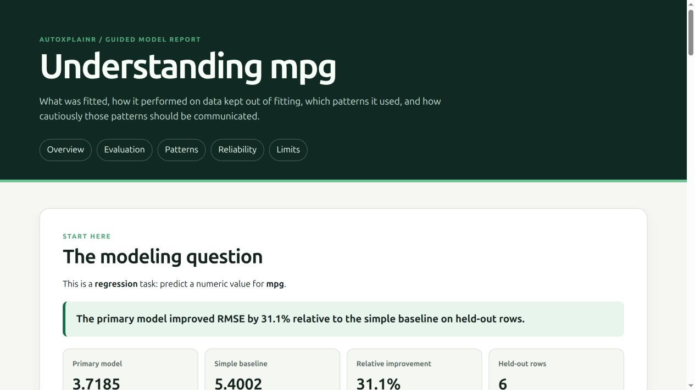

Fit a model. Check whether it works. Understand it. Explain it responsibly.
AutoXplainR is for someone approaching tabular model fitting for the first time. Give it a data frame and the name of the outcome. It creates a held-out test set, fits an understandable model and a deliberately simple baseline, defines the evaluation metrics, investigates the fitted patterns, and builds a standalone report you can read or share.
It works locally without Java, a cloud account, or an LLM. More experienced users can bring their own model, use H2O AutoML, configure the explanation audit, or opt into a hosted or local generative model.

The first model takes three lines
library(AutoXplainR)
result <- autoxplain(mtcars, target_column = "mpg", seed = 2026)
result
render_model_report(result, "my-model-report.html")The default call does seven important things:
- recognizes regression, binary classification, or multiclass classification;
- reserves 20% of the rows for an evaluation the model does not train on;
- learns missing-value replacements and factor levels from the training rows;
- fits an interpretable linear, logistic, or multinomial logistic model;
- fits an intercept-only baseline that ignores all inputs;
- compares both models with plainly defined, task-appropriate metrics; and
- audits importance stability, feature dependence, and fitted effects for the report.
The printed result answers the first practical question: did the primary model improve on a model that knows nothing about the inputs? The report then moves from evaluation to explanation and only then to technical reliability details.
Why this is more than an automatic model fit
Most tools specialize in one part of the journey. AutoXplainR joins four parts that a new modeler otherwise has to assemble and interpret:
| Question | AutoXplainR default |
|---|---|
| What did I fit? | names the task, target, model family, split, and preprocessing |
| Does it work? | evaluates unseen rows and compares with a simple baseline |
| What patterns does it use? | repeated permutation reliance plus ALE or diagnosed PDP effects |
| What am I justified in saying? | warnings, permitted-claim language, provenance, and progressive disclosure |
The distinctive object is the whole communication contract, not a novel bar chart. The underlying estimators are established methods. AutoXplainR’s job is to make their assumptions, failure modes, and language hard to miss while remaining approachable.
Read the result before explaining it
For regression, the main metrics are RMSE, MAE, and R-squared. For binary classification, they are log loss, Brier score, accuracy, balanced accuracy, and ROC AUC. For multiclass classification, they are log loss, Brier score, accuracy, and macro recall. Every definition is stored with the result and displayed beside the score.
result$leaderboard
result$evaluation$metric_definitions
result$evaluation$improvement_over_baselineAn impressive training score is not evidence that a model generalizes. The default report therefore leads with held-out performance. If the primary model does not beat the baseline, the report says so directly and treats the fitted patterns as exploratory.
Understand fitted patterns without claiming causes
The guided workflow can be opened into ordinary model-agnostic explainers:
explainer <- as_explainers(result, models = "main_model")$main_model
importance <- calculate_permutation_importance(
explainer,
n_repeats = 30,
seed = 2026
)
effect <- explain_effect(explainer, feature = "wt")Permutation importance asks how much held-out performance changes after an input is shuffled. Its repeat interval measures randomness in that computation; it is not a population confidence interval. Accumulated local effects (ALE) are the default for numeric effects because marginal PDPs can extrapolate across implausible combinations when predictors are dependent.
Neither method establishes that intervening on a feature would change the outcome. It describes what the fitted prediction function does on the chosen evaluation distribution.
A complete report never requires an LLM
The deterministic local narrative is the default even if an API key happens to exist in the environment:
memo <- generate_natural_language_report(result)
render_model_report(result, "my-model-report.html", narrative = memo)Remote generation is always explicit. Only aggregate metrics, feature names, warnings, and provenance are sent—never raw rows, fitted objects, case-level predictions, or secrets.
narrative_providers()
# Recommended hosted free-tier option as of July 2026
Sys.setenv(GEMINI_API_KEY = "...")
memo <- generate_natural_language_report(result, provider = "gemini")
# Fast hosted alternative
Sys.setenv(GROQ_API_KEY = "...")
memo <- generate_natural_language_report(result, provider = "groq")
# Fully local generation after installing Ollama and the model
memo <- generate_natural_language_report(result, provider = "ollama")Current defaults and trade-offs are inspectable with narrative_providers():
- Gemini uses
gemini-3.5-flash, which currently has an explicit free tier in the official Gemini pricing documentation. - Groq uses
qwen/qwen3.6-27b; free-plan limits are published in the official Groq rate-limit documentation. - Ollama uses
gemma3:4bthrough its local OpenAI-compatible API. - OpenRouter’s
openrouter/freerouter is experimental here because the selected free model can vary; see its free-model routing documentation.
Provider catalogs and limits change. Pin model, retain the attached narrative_provenance, and verify generated prose against the computed report.
Classification works the same way
# Multiclass example
flowers <- autoxplain(iris, target_column = "Species", seed = 2026)
flowers
# Binary outcomes may be factors, characters, logicals, or two-level numerics
binary_result <- autoxplain(customer_data, target_column = "churned")Classification splits are stratified. Probabilistic metrics are used because a model can assign the correct class while still being dangerously overconfident. If a class has fewer than two rows, AutoXplainR stops with an actionable error instead of pretending a reliable split is possible.
Bring your own fitted model
explain_model() separates fitting from explanation. It supports ordinary R models directly and accepts a prediction function for any other framework:
explainer <- explain_model(
model = fitted_object,
data = held_out_data,
y = "outcome",
task = "binary",
positive = "yes",
predict_function = function(model, newdata) {
# Return P(outcome == "yes") as a numeric vector.
},
metadata = list(evaluation_role = "test")
)Regression predictions are numeric vectors. Binary predictions are positive-class probabilities. Multiclass predictions are named probability matrices. AutoXplainR validates the contract before an expensive explanation starts.
Open the advanced evidence layer when you need it
audit <- audit_explanations(
as_explainers(result),
n_repeats = 30,
performance_tolerance = 0.05,
seed = 2026
)
audit
render_explanation_report(audit, "technical-evidence.html")The audit adds repeat-level values, sign stability, feature-dependence diagnostics, prediction agreement, and explanation disagreement among supplied near-optimal models. Its A–D grade is a transparent triage heuristic—not a p-value, causal result, fairness assessment, or certification.
Optional H2O AutoML
H2O remains an explicit fitting engine for users who want a broader candidate set. It requires Java and the h2o package; the default workflow does not.
h2o_result <- autoxplain(
training_data,
target_column = "outcome",
test_data = held_out_data,
engine = "h2o",
max_models = 10,
max_runtime_secs = 300,
seed = 2026
)Held-out test data are not passed to H2O as a validation frame unless requested explicitly. The fitted preprocessing recipe is reused for evaluation data.
Installation
AutoXplainR is under active development and is not yet on CRAN.
# install.packages("pak")
pak::pak("Matt17BR/autoXplainR")Where it fits in the R ecosystem
AutoXplainR is designed to complement, not obscure, strong existing packages.
| Need | Strong existing work | AutoXplainR’s role |
|---|---|---|
| Broad explanation methods | DALEX, ingredients, iml | a smaller beginner contract plus reliability and communication guardrails |
| Formal importance inference | xplainfi | labels default intervals as computational and points formal claims to inferential tools |
| Interactive exploration | modelStudio | produces a portable, dependency-free review artifact |
| Modeling frameworks | tidymodels, mlr3, H2O | provides a first safe model locally and accepts models from other frameworks |
| Predictive multiplicity | Rashomon/model-class-reliance literature | exposes supplied-model disagreement without claiming to enumerate every plausible model |
Interpretation boundaries
- Held-out performance describes the supplied evaluation data, not every future population or time period.
- Permutation importance estimates fitted-model reliance and is sensitive to dependent predictors.
- ALE remains associational even though it reduces the most direct PDP extrapolation problem.
- A near-optimal set contains only the models supplied to the audit.
- Generated prose can be wrong. The numerical report remains authoritative.
- AutoXplainR does not automate causal claims, fairness certification, safety approval, or deployment decisions.
Development and governance
devtools::document()
devtools::test()
devtools::check()Slow H2O integration tests are opt-in:
See the product contract, contribution guide, security policy, roadmap, release checklist, and release notes. Usage questions and early design ideas belong in GitHub Discussions.
Literature foundations
- Fisher, Rudin, and Dominici (2019), All Models are Wrong, but Many are Useful, JMLR 20(177).
- Apley and Zhu (2020), Visualizing the Effects of Predictor Variables in Black Box Supervised Learning Models, JRSS B 82(4).
- Biecek (2018), DALEX: Explainers for Complex Predictive Models in R, JMLR 19(84).
License
MIT © 2025–2026 Matteo Mazzarelli.